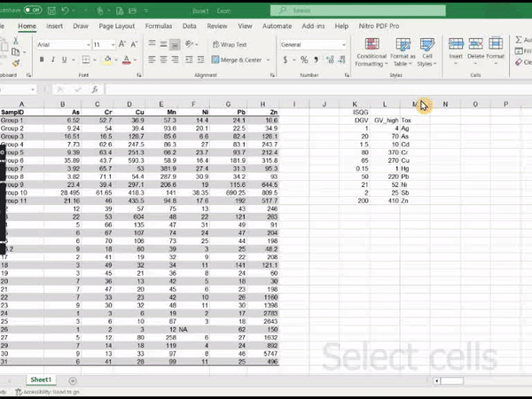

Material to support teaching in Environmental Science at The University of Western Australia
Material to support teaching in Environmental Science at The University of Western Australia
Units ENVT3361, ENVT4461, and ENVT5503
Counting samples with R
Informative summary tables for environmental investigations
Andrew Rate
2024-08-26
Summary statistics tables which include sample counts above environmental thresholds
Load the R packages we need and set a default table style
(‘theme’):
library(flextable)
set_flextable_defaults(font.family = "Arial", font.size = 11,
theme_fun = "theme_booktabs", padding = 1)
library(officer)Introduction
In environmental reporting it's common to produce tables containing statistical summaries of the variables which have been measured at a particular location or in a specific environment. The statistical parameters presented often include basic statistics such as mean, median, standard deviation, minimum, and maximum. In many environmental contexts (e.g. assessing environments for pollution or contamination) it's also very useful to know if any samples have concentrations of contaminants that exceed environmental thresholds, and if so, how many.
The first code chunk (above) shows that we will use the
flextable package for producing nicely-formatted tables. We
also load the officer package to make use of some
additional formatting options in flextable. The code
actually used to make the summary table object(s) makes use of some
functions in base R, with the apply() and
which() functions doing most of the hard work.
Importing environmental threshold data
In this example we will be looking at data on analysis of sediments and soils, for which environmental guideline values exist in Australia. For sediments we use the guidelines provided by Water Quality Australia (2024), which were derived from the interim sediment quality guidelines (ISQG) (hence the name of the file and data frame!). Soil guideline values are from NEPC (2013).
In the code chunk below we make use of the ability to name rows in R data frames. This will be useful later on as we can include the row names in indices to interrogate the data frame for the correct environmental threshold.
ISQG <- read.csv("https://github.com/Ratey-AtUWA/bookChapters/raw/main/ISQG.csv")
row.names(ISQG) <- ISQG$Tox
HIL <- read.csv("https://github.com/Ratey-AtUWA/bookChapters/raw/main/HIL_NEPM.csv")
row.names(HIL) <- HIL$Toxprint(ISQG)
cat("\nNOTES:\nDGV = Default Guideline Value; GV_high = Upper Guideline Value; \n")
cat("Tox = Toxicant\n")## DGV GV_high Tox
## Ag 1.00 4 Ag
## As 20.00 70 As
## Cd 1.50 10 Cd
## Cr 80.00 370 Cr
## Cu 65.00 270 Cu
## Hg 0.15 1 Hg
## Pb 50.00 220 Pb
## Ni 21.00 52 Ni
## Sb 2.00 25 Sb
## Zn 200.00 410 Zn
##
## NOTES:
## DGV = Default Guideline Value; GV_high = Upper Guideline Value;
## Tox = Toxicant## Element Tox Resid...A Resid...B Recreat...C Industr...D
## As Arsenic As 100 500 300 3000
## Be Beryllium Be 60 90 90 500
## B Boron B 4500 40000 20000 300000
## Cd Cadmium Cd 20 150 90 900
## Cr Chromium(VI) Cr 100 500 300 3600
## Co Cobalt Co 100 600 300 4000
## Cu Copper Cu 6000 30000 17000 240000
## Pb Lead Pb 300 1200 600 1500
## Mn Manganese Mn 3800 14000 19000 60000
## Hg Mercury_(inorganic) Hg 40 120 80 730
## CH3Hg Methyl_mercury CH3Hg 10 30 13 180
## Ni Nickel Ni 400 1200 1200 6000
## Se Selenium Se 200 1400 700 10000
## Zn Zinc Zn 7400 60000 30000 400000
## CN Cyanide_(free) CN 250 300 240 1500
##
## NOTES:
## Tox = Toxicant; Resid = Residential;
## Recreat = Recreational / Public Open Space; Industr = IndustrialWe can see from the output above that, for reporting, it would be
worthwhile using a package (such as flextable, but there
are several others) that can produce more attractive and readable
tables.
Importing the environmental data we want to summarise
We will use a subset of a dataset generated by some of our environmental science classes at The University of Western Australia (see Rate and McGrath, 2022 for an earlier version).
git <- "https://github.com/Ratey-AtUWA/Learn-R-web/raw/main/"
sedsoil <- read.csv(paste0(git,"afs1923abridged.csv"), stringsAsFactors = TRUE)
# convert Year to a factor, and SampID to character
sedsoil$Year <- factor(sedsoil$Year)
sedsoil$SampID <- as.character(sedsoil$SampID)
summary(sedsoil)## Year SampID Type DepthType Longitude
## 2019:91 Length:336 Drain_Sed: 61 Core : 47 Min. :115.9
## 2020:75 Class :character Lake_Sed :121 Surface:289 1st Qu.:115.9
## 2021:65 Mode :character Other : 15 Median :115.9
## 2022:31 Saltmarsh:139 Mean :115.9
## 2023:74 3rd Qu.:115.9
## Max. :115.9
##
## Latitude As Cr Cu
## Min. :-31.92 Min. : 0.400 Min. : 1.00 Min. : 2.0
## 1st Qu.:-31.92 1st Qu.: 4.000 1st Qu.:34.00 1st Qu.: 32.0
## Median :-31.92 Median : 6.050 Median :54.70 Median : 61.0
## Mean :-31.92 Mean : 8.159 Mean :49.33 Mean : 111.7
## 3rd Qu.:-31.92 3rd Qu.: 9.000 3rd Qu.:65.45 3rd Qu.: 165.5
## Max. :-31.92 Max. :62.000 Max. :84.00 Max. :1007.8
## NA's :13 NA's :9
## Mn Ni Pb Zn
## Min. : 6.0 Min. : 1.00 Min. : 1.00 Min. : 1.0
## 1st Qu.: 55.7 1st Qu.:13.00 1st Qu.: 25.73 1st Qu.: 108.2
## Median : 79.0 Median :19.00 Median : 37.30 Median : 222.5
## Mean : 143.6 Mean :19.05 Mean : 54.91 Mean : 471.5
## 3rd Qu.: 120.5 3rd Qu.:24.80 3rd Qu.: 52.00 3rd Qu.: 359.5
## Max. :3503.0 Max. :50.00 Max. :831.10 Max. :7556.4
## NA's :9 NA's :4Generate summary statistics
# first define the variables we want to summarise, and make the basic summary
elem0 <- c("As","Cr","Cu","Mn","Ni","Pb","Zn")
(summ0 <- data.frame(tox=elem0,
mean=apply(sedsoil[,elem0], 2, function(x){mean(x, na.rm=T)}),
sd = apply(sedsoil[,elem0], 2, function(x){sd(x, na.rm=T)}),
min = apply(sedsoil[,elem0], 2, function(x){min(x, na.rm=T)}),
median = apply(sedsoil[,elem0], 2, function(x){median(x, na.rm=T)}),
max = apply(sedsoil[,elem0], 2, function(x){max(x, na.rm=T)}),
n = apply(sedsoil[,elem0], 2, function(x){length(na.omit(x))}),
nNA = apply(sedsoil[,elem0], 2, function(x){sum(is.na(x))})))## tox mean sd min median max n nNA
## As As 8.158529 7.712881 0.4 6.05 62.0 323 13
## Cr Cr 49.332589 20.581402 1.0 54.70 84.0 336 0
## Cu Cu 111.716208 121.118755 2.0 61.00 1007.8 327 9
## Mn Mn 143.608036 309.044956 6.0 79.00 3503.0 336 0
## Ni Ni 19.049388 7.998509 1.0 19.00 50.0 327 9
## Pb Pb 54.906101 84.550788 1.0 37.30 831.1 336 0
## Zn Zn 471.488554 1016.997243 1.0 222.50 7556.4 332 4Instead of making multiple usage of the apply()
function, we could use the convenient numSummary() function
in the RcmdrMisc:: package (Fox & Marquez 2023). To
look at how that's done, look at the alternative version of this page.
Add the count information
To perform the actual counting of sample numbers, we use base R's
which() function and the customised column and row names we
generated earlier, e.g.,
which(sedsoil[,elem0[i]] > ISQG[elem0[i],"DGV"]).
- The code
sedsoil[,elem0[i]]selects the column fromsedsoilwith the same name as the ith element of the list of variableselem0, i.e.elem0[i].
- The code
ISQG[elem0[i],"DGV"]find the desired value from the ISQG table using the row indexelem0[i], and the column index"DGV". So, the variable names in the data must match the toxicant names in the thresholds table!! - So,
which(sedsoil[,elem0[i]] > ISQG[elem0[i],"DGV"])will give the row indices insedsoilfor which the condition isTRUE, and the code then simply counts these usinglength(which(sedsoil[,elem0[i]] > ISQG[elem0[i],"DGV"]))
OutputDF <- summ0
# add blank columns in data frame for environmental thresholds
OutputDF$DGV <- rep(NA,length(elem0))
OutputDF$GV_high <- rep(NA,length(elem0))
OutputDF$HIL_C <- rep(NA,length(elem0))
# count the values for each element exceeding the various thresholds
# and populate the data frame
for(i in 1:length(elem0)){
OutputDF$DGV[i] <-
length(which(sedsoil[,elem0[i]] > ISQG[elem0[i],"DGV"]))
OutputDF$GV_high[i] <-
length(which(sedsoil[,elem0[i]] > ISQG[elem0[i],"GV_high"]))
OutputDF$HIL_C[i] <-
length(which(sedsoil[,elem0[i]] > HIL[elem0[i],"Recreational_C"]))
}
# rename the columns to more understandable names
colnames(OutputDF)[9:11] <- c("n > DGV","n > GV-high", "n > HIL(C)")
print(OutputDF, row.names = F)## tox mean sd min median max n nNA n > DGV n > GV-high
## As 8.158529 7.712881 0.4 6.05 62.0 323 13 26 0
## Cr 49.332589 20.581402 1.0 54.70 84.0 336 0 6 0
## Cu 111.716208 121.118755 2.0 61.00 1007.8 327 9 156 26
## Mn 143.608036 309.044956 6.0 79.00 3503.0 336 0 0 0
## Ni 19.049388 7.998509 1.0 19.00 50.0 327 9 137 0
## Pb 54.906101 84.550788 1.0 37.30 831.1 336 0 91 9
## Zn 471.488554 1016.997243 1.0 222.50 7556.4 332 4 185 73
## n > HIL(C)
## 0
## 0
## 0
## 0
## 0
## 4
## 0We could stop here, but this is not an attractively-formatted table.
To make a publication-quality table, we first make a new data frame with
columns and rows transposed (using t()), with the previous
column names as the first column.
Publication-quality table
To avoid lots of nesting of flextable functions, we find
it easiest to pipe the successive lines of code containing formatting
modifications. We use the [new] native R pipe operator
|> here, but the older magrittr pipe
operator %>% would work if you prefer. Where we need the
officer package is to interpret the formatting option
fp_p=fp_par(text.align = "left", padding.bottom = 6) in the
set_caption() function.
# make a new data frame with columns and rows transposed, and the
# previous column names as the first column:
ft <- data.frame(Statistic=colnames(OutputDF[,2:ncol(OutputDF)]),
t(signif(OutputDF[,2:ncol(OutputDF)],3)))
# Then, use flextable to output a table in publication-quality form
flextable(ft) |>
width(j=c(1:7), width=c(3,rep(2.2,6)), unit="cm") |>
set_header_labels(values=list(V1="")) |>
align(j=2:8, align="right", part="all") |>
padding(i=8, padding.top = 8) |>
bold(bold=TRUE, part="header") |>
set_formatter(As=function(x){sprintf("%.01f",x)},
Cr=function(x){sprintf("%.0f",x)},
Pb=function(x){sprintf("%.0f",x)}) |>
set_caption(caption="Table 1: Summary statistics for trace element concentrations (mg/kg) in sediment or soil at Ashfield Flats 2019-2023. Abbreviations: n = number of valid observations; nNA = number of missing observations; n > DGV is number of samples exceeding the sediment Default Guideline Value; n > GV-high is number of samples exceeding the sediment upper Guideline Value at which toxicity effects might be expected (Water Quality Australia, 2024). HIL(C) is the human-health based investigation level for Recreational (public open space) land use (NEPC, 2013).", align_with_table=F, fp_p=fp_par(text.align = "left", padding.bottom = 6))Statistic | As | Cr | Cu | Mn | Ni | Pb | Zn |
|---|---|---|---|---|---|---|---|
mean | 8.2 | 49 | 112 | 144 | 19 | 55 | 471 |
sd | 7.7 | 21 | 121 | 309 | 8 | 85 | 1,020 |
min | 0.4 | 1 | 2 | 6 | 1 | 1 | 1 |
median | 6.0 | 55 | 61 | 79 | 19 | 37 | 222 |
max | 62.0 | 84 | 1,010 | 3,500 | 50 | 831 | 7,560 |
n | 323.0 | 336 | 327 | 336 | 327 | 336 | 332 |
nNA | 13.0 | 0 | 9 | 0 | 9 | 0 | 4 |
n > DGV | 26.0 | 6 | 156 | 0 | 137 | 91 | 185 |
n > GV-high | 0.0 | 0 | 26 | 0 | 0 | 9 | 73 |
n > HIL(C) | 0.0 | 0 | 0 | 0 | 0 | 4 | 0 |
The final table could now go into a report, and most readers would be
happy with its appearance. We could probably do something about the
alignment of the numeric columns, but decimal point alignment is not
available in flextable yet.
The next really useful type of information to obtain would be where the samples which exceed environmental thresholds are. That question leads us to another more basic question: “How can we map our data in R,” and so other sessions cover preparing maps in R, and from there we can move on to spatial analysis.
Raw data tabulation
In environmental consultancy reports, it's common to tabulate the raw
data and indicate which individual samples exceed environmental
guidelines (“assessment criteria”). This final section shows a
way we can do this in R, using similar concepts to the summary
statistics table above, but also including some R programming structures
such as for() and if() functions.
Defining input data
We will use a subset of the data we've already used, so that our raw
data table does not get too large! By running table() on
the Year column, we see that we have 31 samples in 2022,
which won't be too big.
##
## 2019 2020 2021 2022 2023
## 91 75 65 31 74We can then subset the sedsoil data frame to include
just the 2022 data, using droplevels() to remove any unused
factor levels (e.g. years other that 2022):
## 'data.frame': 31 obs. of 13 variables:
## $ Year : Factor w/ 1 level "2022": 1 1 1 1 1 1 1 1 1 1 ...
## $ SampID : chr "Group 1" "Group 2" "Group 3" "Group 4" ...
## $ Type : Factor w/ 4 levels "Drain_Sed","Lake_Sed",..: 4 4 4 4 4 4 4 4 4 4 ...
## $ DepthType: Factor w/ 1 level "Surface": 1 1 1 1 1 1 1 1 1 1 ...
## $ Longitude: num 116 116 116 116 116 ...
## $ Latitude : num -31.9 -31.9 -31.9 -31.9 -31.9 ...
## $ As : num 6.52 9.24 16.51 7.73 9.39 ...
## $ Cr : num 52.7 54 16.5 62.6 63.4 ...
## $ Cu : num 36.9 39.4 128.7 247.5 251.3 ...
## $ Mn : num 57.3 93.6 85.6 86.3 66.2 ...
## $ Ni : num 14.4 20.1 6.6 27 23.7 ...
## $ Pb : num 24.1 22.5 82.4 83.1 93.7 ...
## $ Zn : num 16.6 34.9 126.1 243.7 212.4 ...## SampID As Cr Cu Mn Ni Pb Zn
## 232 Group 1 6.52 52.7 36.9 57.3 14.4 24.1 16.6
## 233 Group 2 9.24 54.0 39.4 93.6 20.1 22.5 34.9
## 234 Group 3 16.51 16.5 128.7 85.6 6.6 82.4 126.1
## 235 Group 4 7.73 62.6 247.5 86.3 27.0 83.1 243.7
## 236 Group 5 9.39 63.4 251.3 66.2 23.7 93.7 212.4
## 237 Group 6 35.89 43.7 593.3 58.9 16.4 181.9 315.8Making the data table showing samples exceeding guidelines
We need to use a somewhat complex control structure in our code, as shown below
data0 <- ss2022[ ,colz]
for(j in 2:ncol(data0)){
for(i in 1:nrow(data0)){
# first check if guideline value or observation not missing!
if(!is.na(data0[i,j]) & !is.na(ISQG[colnames(data0)[j],1])
& !is.na(ISQG[colnames(data0)[j],2])) {
# then add symbols to observations exceeding GV-high or DGV
if(as.numeric(data0[i,j]) >= ISQG[colnames(data0)[j],2]) {
data0[i,j] <- paste0(data0[i,j],"\u26A0")
} else if(as.numeric(data0[i,j]) < ISQG[colnames(data0)[j],2] &
as.numeric(data0[i,j]) >= ISQG[colnames(data0)[j],1]) {
data0[i,j] <- paste0(data0[i,j],"\u2191")
} # close if() sequence for GV.high ≥ observation > DGV or obs ≥ DGV
} # close if() statement for missing guideline or observation
} # close for(i...) loop
} # close for(j...) loopOnce we have made the table with values exceeding guidelines
identified, we again use flextable() to format our output
nicely (Table 2).
flextable(data0) |> bold(bold=T, part="header") |>
width(width=c(3,rep(2,7)), unit="cm") |>
set_header_labels(Sample_ID="Sample code") |>
align(align="left", part="all") |>
valign(valign = "bottom", part="header") |>
set_header_labels(SampID="Sample ID") |>
set_caption(caption="Table 2: Concentrations of selected elements (mg/kg) in Ashfield Flats sediments sampled in March 2022. Concentrations followed by (↑) exceed the Default Guideline Value (DGV), or with (⚠) exceed the GV-high value for that column's element (sediment guidelines from Water Quality Australia, 2024).", align_with_table=F, fp_p=fp_par(text.align = "left", padding.bottom = 6))Sample ID | As | Cr | Cu | Mn | Ni | Pb | Zn |
|---|---|---|---|---|---|---|---|
Group 1 | 6.52 | 52.70 | 36.9 | 57.3 | 14.4 | 24.1 | 16.6 |
Group 2 | 9.24 | 54.00 | 39.4 | 93.6 | 20.1 | 22.5 | 34.9 |
Group 3 | 16.51 | 16.50 | 128.7↑ | 85.6 | 6.6 | 82.4↑ | 126.1 |
Group 4 | 7.73 | 62.60 | 247.5↑ | 86.3 | 27↑ | 83.1↑ | 243.7↑ |
Group 5 | 9.39 | 63.40 | 251.3↑ | 66.2 | 23.7↑ | 93.7↑ | 212.4↑ |
Group 6 | 35.89↑ | 43.70 | 593.3⚠ | 58.9 | 16.4 | 181.9↑ | 315.8↑ |
Group 7 | 3.92 | 65.70 | 53 | 381.9 | 27.4↑ | 31.3 | 95.3 |
Group 8 | 3.82 | 71.10 | 54.4 | 287.9 | 30.9↑ | 34.2 | 93 |
Group 9 | 23.4↑ | 39.40 | 297.1⚠ | 206.6 | 19 | 115.6↑ | 644.5⚠ |
Group 10 | 28.495↑ | 61.65 | 418.3⚠ | 141.0 | 38.35↑ | 690.25⚠ | 809.5⚠ |
Group 11 | 21.16↑ | 46.00 | 435.5⚠ | 94.8 | 17.6 | 192↑ | 517.7⚠ |
12 | 12 | 39.00 | 57 | 75.0 | 13 | 43 | 246↑ |
13 | 22↑ | 53.00 | 604⚠ | 48.0 | 22↑ | 121↑ | 263↑ |
14 | 5 | 66.00 | 135↑ | 47.0 | 31↑ | 49 | 91 |
15 | 6 | 67.00 | 107↑ | 74.0 | 24↑ | 47 | 204↑ |
16 | 6 | 70.00 | 106↑ | 73.0 | 25↑ | 44 | 198 |
16.2 | 9 | 18.00 | 60 | 39.0 | 3 | 25 | 48.2 |
17 | 2 | 41.00 | 19 | 32.0 | 9 | 22 | 208↑ |
18 | 3 | 49.00 | 32 | 34.0 | 11 | 141↑ | 121.1 |
19 | 3 | 45.00 | 21 | 36.0 | 8 | 24 | 60 |
20 | 7 | 36.00 | 13 | 42.0 | 5 | 18 | 30 |
21 | 7 | 47.00 | 20 | 45.0 | 6 | 23 | 198 |
22 | 7 | 33.00 | 23 | 42.0 | 10 | 26 | 1160⚠ |
23 | 9 | 30.00 | 32 | 48.0 | 11 | 30 | 1398⚠ |
24 | 1 | 3.00 | 6 | 19.0 | 2 | 17 | 2783⚠ |
25 | 3 | 6.00 | 10 | 87.0 | 3 | 18 | 2643⚠ |
26 | 1 | 2.00 | 3 | 12.0 | 62↑ | 150 | |
27 | 5 | 12.00 | 80↑ | 258.0 | 6 | 27 | 1632⚠ |
29 | 7 | 14.00 | 18 | 119.0 | 4 | 24 | 892⚠ |
30 | 9 | 13.00 | 33 | 97.0 | 8 | 46 | 5747⚠ |
31 | 6 | 41.00 | 28 | 99.0 | 11 | 25 | 496⚠ |
Tables 1 and 2 are the main types of Table which might be presented in environmental consultancy reports such as a Detailed Site Investigation, or reports on ongoing monitoring.
Different ways to make a raw data table, showing guideline exceedances
1. Using flextable() conditional formatting
This is logical, but the code gets a bit lengthy since there are
different conditions for each column> We also need to [conditionally]
apply the different formats for each condition separately (i.e.
bg(), bold()). Here we also use the
flextable set_fomatter() function to round to
a fixed number (0 or 1) decimal places, but this is optional.
flextable(ss2022[,c(2,7:13)]) |> bold(bold=T, part="header") |>
width(width=c(3,rep(2,7)), unit="cm") |>
set_header_labels(Sample_ID="Sample code") |>
align(align="center", j=2:8, part="all") |>
valign(valign = "bottom", part="header") |>
bg(~ As > ISQG["As","DGV"], j="As", bg="#ffff60", part="body") |>
bg(~ Cr > ISQG["Cr","DGV"], j="Cr", bg="#ffff60", part="body") |>
bg(~ Cu > ISQG["Cu","DGV"], j="Cu", bg="#ffff60", part="body") |>
bg(~ Ni > ISQG["Ni","DGV"], j="Ni", bg="#ffff60", part="body") |>
bg(~ Pb > ISQG["Pb","DGV"], j="Pb", bg="#ffff60", part="body") |>
bg(~ Zn > ISQG["Zn","DGV"], j="Zn", bg="#ffff60", part="body") |>
bold(~ As > ISQG["As","GV_high"], j="As", bold=TRUE, part="body") |>
bold(~ Cr > ISQG["Cr","GV_high"], j="Cr", bold=TRUE, part="body") |>
bold(~ Cu > ISQG["Cu","GV_high"], j="Cu", bold=TRUE, part="body") |>
bold(~ Ni > ISQG["Ni","GV_high"], j="Ni", bold=TRUE, part="body") |>
bold(~ Pb > ISQG["Pb","GV_high"], j="Pb", bold=TRUE, part="body") |>
bold(~ Zn > ISQG["Zn","GV_high"], j="Zn", bold=TRUE, part="body") |>
bg(~ As > ISQG["As","GV_high"], j="As", bg="orange", part="body") |>
bg(~ Cr > ISQG["Cr","GV_high"], j="Cr", bg="orange", part="body") |>
bg(~ Cu > ISQG["Cu","GV_high"], j="Cu", bg="orange", part="body") |>
bg(~ Ni > ISQG["Ni","GV_high"], j="Ni", bg="orange", part="body") |>
bg(~ Pb > ISQG["Pb","GV_high"], j="Pb", bg="orange", part="body") |>
bg(~ Zn > ISQG["Zn","GV_high"], j="Zn", bg="orange", part="body") |>
set_formatter(As=function(x){sprintf("%.01f",x)},
Cr=function(x){sprintf("%.0f",x)},
Cu=function(x){sprintf("%.0f",x)},
Mn=function(x){sprintf("%.0f",x)},
Ni=function(x){sprintf("%.0f",x)},
Pb=function(x){sprintf("%.0f",x)},
Zn=function(x){sprintf("%.0f",x)}) |>
set_caption(caption="Table 3: Concentrations of selected elements (mg/kg) in Ashfield Flats sediments sampled in March 2022. Light shaded (yellow) cells show concentrations exceeding the Default Guideline Value (DGV); darker shading (orange) + bold exceed the GV-high value for that column's element (sediment guidelines from Water Quality Australia, 2024).", align_with_table=F, fp_p=fp_par(text.align = "left", padding.bottom = 6))SampID | As | Cr | Cu | Mn | Ni | Pb | Zn |
|---|---|---|---|---|---|---|---|
Group 1 | 6.5 | 53 | 37 | 57 | 14 | 24 | 17 |
Group 2 | 9.2 | 54 | 39 | 94 | 20 | 22 | 35 |
Group 3 | 16.5 | 16 | 129 | 86 | 7 | 82 | 126 |
Group 4 | 7.7 | 63 | 248 | 86 | 27 | 83 | 244 |
Group 5 | 9.4 | 63 | 251 | 66 | 24 | 94 | 212 |
Group 6 | 35.9 | 44 | 593 | 59 | 16 | 182 | 316 |
Group 7 | 3.9 | 66 | 53 | 382 | 27 | 31 | 95 |
Group 8 | 3.8 | 71 | 54 | 288 | 31 | 34 | 93 |
Group 9 | 23.4 | 39 | 297 | 207 | 19 | 116 | 644 |
Group 10 | 28.5 | 62 | 418 | 141 | 38 | 690 | 810 |
Group 11 | 21.2 | 46 | 436 | 95 | 18 | 192 | 518 |
12 | 12.0 | 39 | 57 | 75 | 13 | 43 | 246 |
13 | 22.0 | 53 | 604 | 48 | 22 | 121 | 263 |
14 | 5.0 | 66 | 135 | 47 | 31 | 49 | 91 |
15 | 6.0 | 67 | 107 | 74 | 24 | 47 | 204 |
16 | 6.0 | 70 | 106 | 73 | 25 | 44 | 198 |
16.2 | 9.0 | 18 | 60 | 39 | 3 | 25 | 48 |
17 | 2.0 | 41 | 19 | 32 | 9 | 22 | 208 |
18 | 3.0 | 49 | 32 | 34 | 11 | 141 | 121 |
19 | 3.0 | 45 | 21 | 36 | 8 | 24 | 60 |
20 | 7.0 | 36 | 13 | 42 | 5 | 18 | 30 |
21 | 7.0 | 47 | 20 | 45 | 6 | 23 | 198 |
22 | 7.0 | 33 | 23 | 42 | 10 | 26 | 1160 |
23 | 9.0 | 30 | 32 | 48 | 11 | 30 | 1398 |
24 | 1.0 | 3 | 6 | 19 | 2 | 17 | 2783 |
25 | 3.0 | 6 | 10 | 87 | 3 | 18 | 2643 |
26 | 1.0 | 2 | 3 | 12 | NA | 62 | 150 |
27 | 5.0 | 12 | 80 | 258 | 6 | 27 | 1632 |
29 | 7.0 | 14 | 18 | 119 | 4 | 24 | 892 |
30 | 9.0 | 13 | 33 | 97 | 8 | 46 | 5747 |
31 | 6.0 | 41 | 28 | 99 | 11 | 25 | 496 |
2. Using conditional formatting in Microsoft Excel®
Create an Excel workbook containing the table (e.g. values as in Table 2 or Table 3 above)
Select the range of your Excel worksheet to be formatted (i.e. one of the concentration columns)
In the upper ‘ribbon’ menu select Home » Conditional Formatting » Highlight cells rules » Greater than...
In the dialog box which appears, enter the value relevant to the column selected (e.g. DGV from the Sediment quality Guidelines), and choose a highlight style

Figure 1: Animation of conditional formatting in Excel showing highlighting of zinc concentrations above both the DGV and GV-high guideline values.
References
Gohel D, Moog S (2024). officer: Manipulation of Microsoft Word and PowerPoint Documents. R package version 0.6.6, https://CRAN.R-project.org/package=officer.
Gohel D, Skintzos P (2024). flextable: Functions for Tabular Reporting. R package version 0.9.6, https://CRAN.R-project.org/package=flextable. (see also David Gohel's free eBook Using the flextable R package).
NEPC (National Environment Protection Council). (2013). Schedule B(1): Guideline on the Investigation Levels for Soil and Groundwater. In National Environment Protection (Assessment of Site Contamination) Measure (Amended). Commonwealth of Australia.
Rate, A. W., & McGrath, G. S. (2022). Data for assessment of sediment, soil, and water quality at Ashfield Flats Reserve, Western Australia. Data in Brief, 41, 107970. https://doi.org/10.1016/j.dib.2022.107970
Water Quality Australia. (2024). Toxicant default guideline values for sediment quality. Department of Climate Change, Energy, the Environment and Water, Government of Australia. Retrieved 2024-04-11 from https://www.waterquality.gov.au/anz-guidelines/guideline-values/default/sediment-quality-toxicants
CC-BY-SA • All content by Ratey-AtUWA. My employer does not necessarily know about or endorse the content of this website.
Created with rmarkdown in RStudio. Currently using the free yeti theme from Bootswatch.